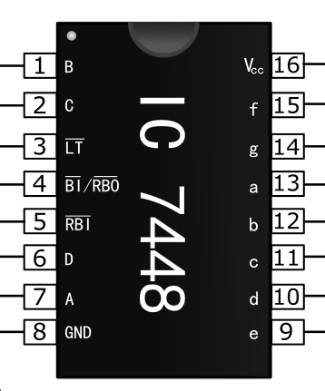
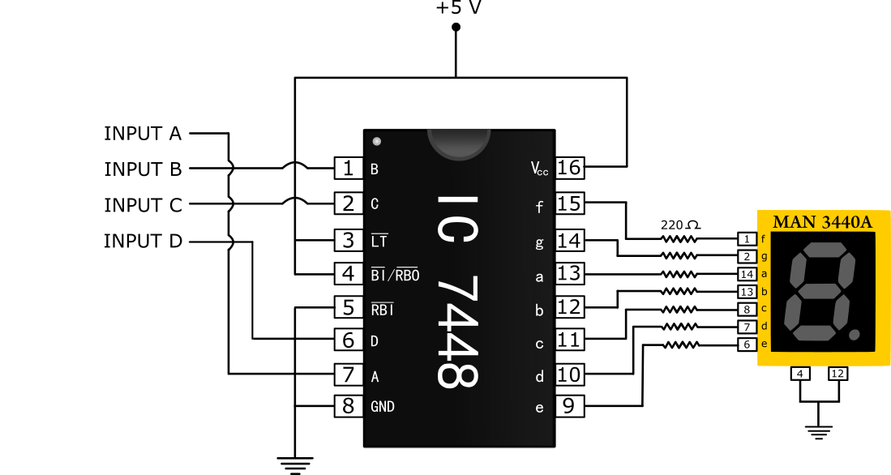

Digital Electronics
Study and Verification of Truth Table of BCD to 7-Segment Display Decoder
Aim
To study and verify the Truth Table of BCD to 7-Segment Display Decoder.
Theory
INTRODUCTION
A seven-segment display is an electronic display device for displaying decimal numerals. Seven-segment displays are widely used in digital clocks, electronic meters and other electronic devices that display numerical information.
History of 7 Segment Displays
The seven segment display dates back to century old. In the year 1908 F.W. Wood invented eight segment displays which displays the digit ‘4’ by using diagonal bar. After that in 1910 seven segment display is invented and is illuminated using incandescent bulbs .They are used in electric power plants but has gained no much reputation. Later in 1970’s, with the advent of LEDs usage of seven segment displays increased to a large extent.
Internal Structure of 7 Segment Display
The internal structure of display is very hard. Internally, the device will have SMD LEDs. This can be divided into two parts i.e. internal circuit and the display. The internal circuit will have LEDs arranged in the rectangular form. These two parts are surrounded by glass, ceramics and plastic in order to protect them.
Pin Diagram of 7 Segment Display
Generally seven segment displays are available in 10 pin package. The pin diagram of seven segment display is shown in the below figure. Seven segment display is an electronic circuit consisting of 10 pins.

Figure-1: 7 Segment display pin configuration.
Out of 10 pins 8 are LED pins and these are left freely. 2 pins in middle are common pins and these are internally shorted. Depending on either the common pin is cathode or anode seven segment displays can be either named as common cathode or common anode display respectively.
Pin Configuration of 7 Segment Display
The 7-segment has the simplest pin configuration. These pins are easy to use directly with any microcontroller or microprocessor. It is easy to use and easy to check with simple power input. All the pins of the display device are:
| PINS | NAME | DETAILS |
|---|---|---|
| PIN_1 | e | The first pin 1 connects with the left bottom LED of the display. |
| PIN_2 | d | Pin 2 helps to light up the bottom-most led. |
| PIN_3 | com | This pin will common with ground/power. It depends on the type of the 7-segment either it is the common cathode or anode. |
| PIN_4 | c | Pin 4 light up the bottom right led to the display |
| PIN_5 | DP | There is a decimal point on the 7-segment which uses the pin 5 to light up. |
| PIN_6 | b | It controls the right top led light. |
| PIN_7 | a | The top led of the 7-segments is at pin 7. |
| PIN_8 | com | Pin 8 is a second common ground pin, works like same as pin 3. |
| PIN_9 | f | Top-left led lights up through pin 9. |
| PIN_10 | g | Power input on pin 10 lights up the middle led. |
7 Segment Display using BCD
BCD (Binary Coded Decimal) is an encoding scheme which represents each of the decimal numbers by its equivalent 4-bit binary pattern. Seven segment displays comprise of seven individual segments formed by either Light Emitting Diodes (LEDs) or Liquid Crystal Displays (LCDs) arranged in a definite pattern .
A 7 Segment LED display generally has 8 input connections, one for each LED segment and one that acts as a common terminal. There are 2 types of 7 Segment LED digital display.
- Common Cathode Display – All the cathode connections of the LEDs are connected to ground. A logic '1' applied to the anode terminal of the individual segment illuminates it i.e. All the negative terminals (Cathode) of all the 8 LEDs are connected together. All the positive thermals are left alone.
- Common Anode Display – All the anode connections of the LEDs are connected to VCC. A logic '0' applied to the cathode terminal of the individual segment illuminates it i.e. All the Positive terminals (Anode) of all the 8 LEDs are connected together. All the negative terminals are left alone.

Figure-2: Common cathode 7-Segment display.

Figure-3: Common anode 7-Segment display.
BCD to 7 Segment Display Decoder
A BCD to Seven Segment decoder is a combinational logic circuit that accepts a decimal digit in BCD (input) and generates appropriate outputs for the segments to display the input decimal digit.
IC-7448 BCD to 7-Segment Decoder
Figure-4: IC-7448 BCD to 7-Segment Decoder.
This package accepts a 1-2-4-8 positive-logic Binary Coded Decimal (BCD) input and converts it to the proper pattern necessary to illuminate a 7 segment display. A high output is intended to light the segment. (Common cathode), meaning the negative connection of all of the LEDs is tied together.
Working of 7 Segment Display
Seven segment display works, by glowing the required respective LEDs in the numeral. The display is controlled using pins that are left freely. Forward biasing of these pins in a sequence will display the particular numeral or alphabet. Depending on the type of seven segment the segment pins are applied with logic high or logic zero and in the similar way to the common pins also. Another way of driving the seven segments is through integrated circuits. This is generally called as seven segment driver or decoder. Here the decoder is 7448. This IC converts 4 bit binary coded decimal to 8 bit seven segment data. The decoder connected to the seven segments is shown below.
Figure-5: Driving of a 7-segment display using BCD to seven segment decoder.
The above figure shows driving of a seven segment display using BCD to seven segment decoder. Here we have to give BCD data as input to display digits 0 to 9. For example, to display the digit 7 the input to be applied is 0111. The truth table is given below:

Figure-6: Truth table of a 7-segment display using BCD to seven segment decoder.
The decoder decodes the applied BCD input and sends the appropriate output to the segments. The decoder outputs are connected to the seven segment inputs through the resistors. These resistors are used to limit the current.
Application of 7 Segment Display
- The device has vast use in most old and modern devices.
- The simple calculators use 7-segments too.
- The voltmeters at a commercial level for home use the 7-segment display.
Procedure
Step-1) Press the power supply switch  to connect supply to the circuit.
to connect supply to the circuit.
Step-2) Press the switches for inputs "A", "B", "C" and "D".
The switch in ON state is  and the switch in OFF state is
and the switch in OFF state is  .
.
Step-3) The output on 7-Segment Display will show according to the truth table.
Step-4) Repeat step-2 for all state of inputs and check the observations.
Simulator
Observation
Observe truth table for all combinations and verify with truth table given in theory section.
References
- Digital Principles and Applications, by Leach and Malvino.
- Digital Logic Design, Leach, by Malvino, and Saha
- Engineering Digital Design, by Richard F. Tinder.
- Digital Logic and Computer Design, by M. Morris Mano
- Digital Systems: Principles and Applications, Neal S. Widmer , Ronald J. Tocci , Gregory L. Moss